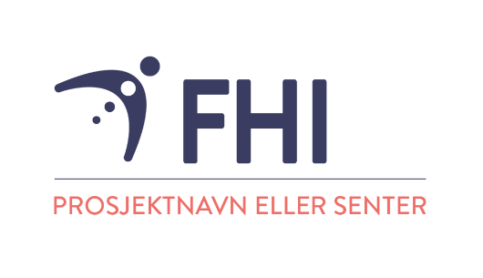

Mental Health Together (MENTOR): Et europeisk samarbeidsprosjekt om unges psykiske helse
Har du fått SMS med invitasjon til å delta i undersøkelsen?
Informasjon
MENTOR er en undersøkelse som kartlegger psykisk helse blant unge og unge voksne. Formålet med undersøkelsen er å skaffe pålitelige data om psykisk helse som enkelt kan sammenlignes på tvers av europeiske land. Første datainnsamling er planlagt høsten 2026.
Hensikten med prosjektet
Gjennom undersøkelsen vil vi kartlegge forekomsten av flere forskjellige typer psykiske problemer, slik som depresjon, angst, ADHD og atferdsforstyrrelse. Vi kartlegger også andre temaer som livskvalitet og traumatiske opplevelser. Det samme spørreskjemaet vil også bli gitt i andre europeiske land, noe som gjør det mulig å sammenligne psykiske helseplager og risiko- og beskyttelsesfaktorer internasjonalt.
Om deltakerne
Vi ønsker å rekruttere et bredt utvalg av unge mennesker i Norge i alderen 16 til 20 år. Det eneste utvalgskriteriet er at deltakerne har en folkeregistrert adresse i Norge. Det er et særskilt mål å kartlegge den psykiske helsen til unge mennesker som har flyktet fra Ukraina, ettersom dette er en voksende gruppe vi vet lite om. Dette er også en gruppe der er viktig å samkjøre informasjon om på tvers av europeiske land.
Hva innebærer det å delta i MENTOR-undersøkelsen?
Det er frivillig for den enkelte å delta i MENTOR-undersøkelsen. Deltakelse innebærer å svare på et digitalt spørreskjema. Det tar ca. 20–30 minutter å fylle ut skjemaet.
Spørsmålene i undersøkelsen handler om hvordan unge har det, om psykisk og fysisk helse, fritidsaktiviteter og mediebruk. Noen spørsmål handler om vanskelige opplevelser og traumer. Dette er viktig å undersøke fordi det kan ha stor betydning for psykisk helse. Store deler av spørreskjemaet er på forhånd testet ut på grupper av ungdommer, og spørsmålene er tilpasset på bakgrunn av tilbakemeldinger fra dem.
Alle deltakere er anonyme. Ingen av spørsmålene i undersøkelsen er om ting som kan brukes til å identifisere den som svarer, som navn eller adresse. Alle opplysninger behandles konfidensielt og i tråd med personvernregelverket.
Alle som deltar i undersøkelsen kan bli med i trekningen av 20 gavekort på 500 kr.
Har du spørsmål, ta gjerne kontakt med prosjektgruppen ved Olav Tveit: oltv@fhi.no